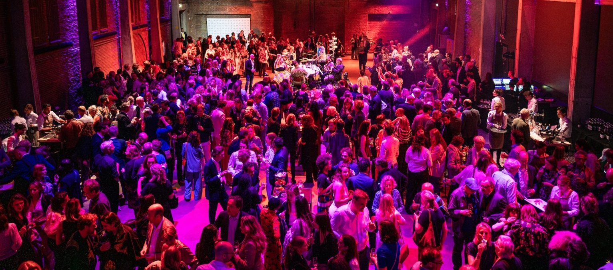

Nieuwjaarsborrel

De nieuwjaarsborrel is het eerste moment van het jaar waarop iedereen elkaar weer ziet. Collega's, relaties, of allebei.
Soms begint de avond met een toespraak, soms is het de hele avond feest. Wij zorgen voor licht, geluid en muziek die daarbij passen.
Alles afgestemd op de ruimte, ook als dat je eigen kantoor is of een (industriële) ruimte om te toveren tot eventlocatie.
Wat we je bieden
Licht, geluid en muziek
- De mogelijkheid om versterkt een speech te geven
- Opkomstmuziek
- Sfeerlicht in je huisstijlkleuren
- Je logo geprojecteerd op wand of vloer
- Een dj die het event van begin tot eind muzikaal omlijst
- Een live muzikant bij de dj-setSaxofoon, percussie of vocals
- En jouw speciale wensen
Organiseer je een nieuwjaarsborrel?
Laat je gegevens achter, dan neem ik contact met je op.

Maarten VersteegOprichter HEAR